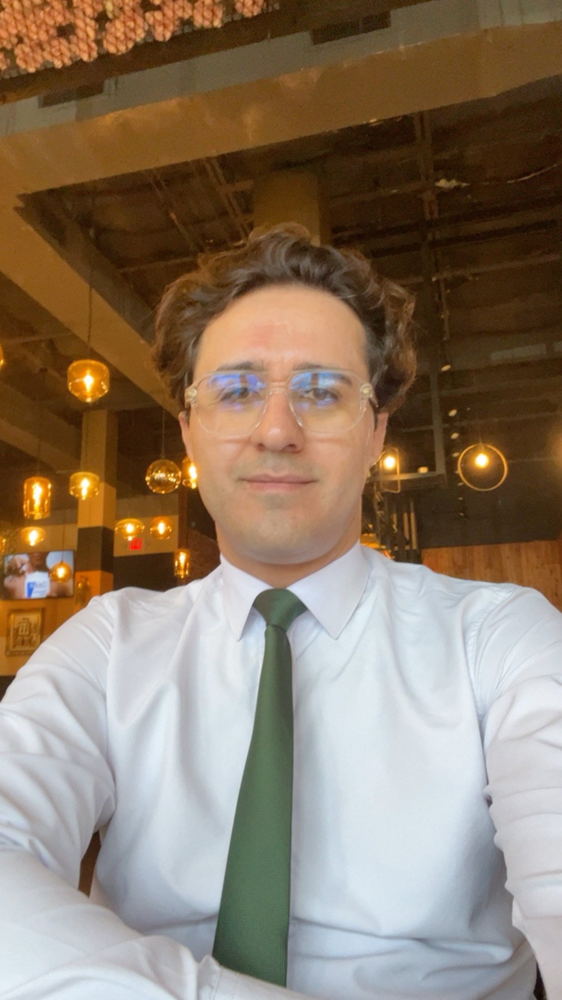
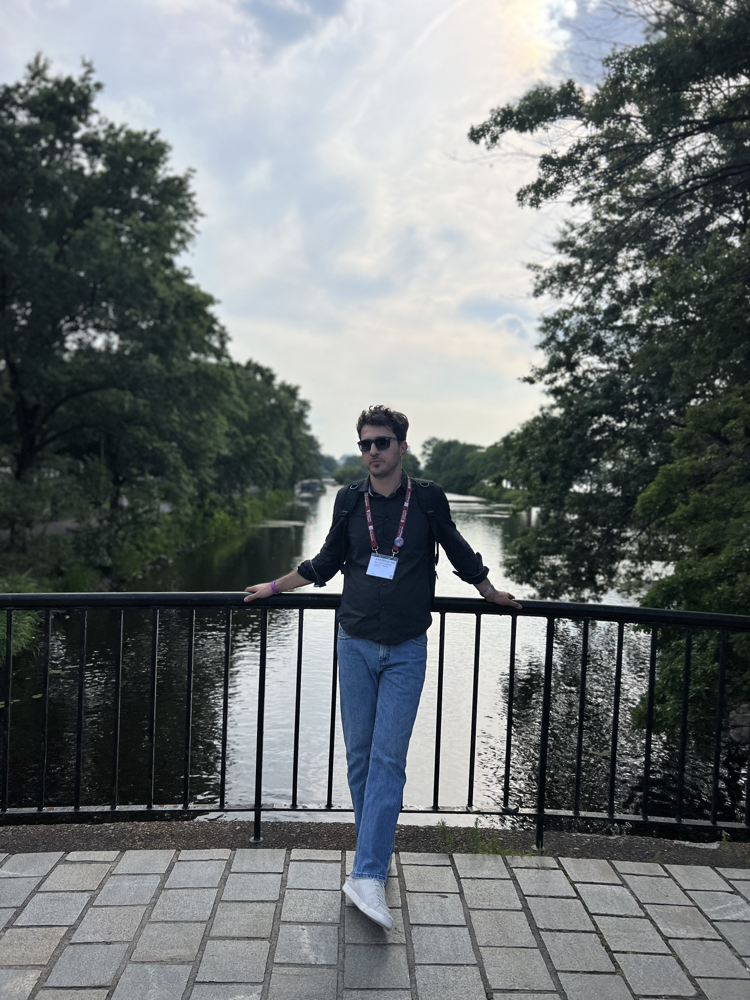
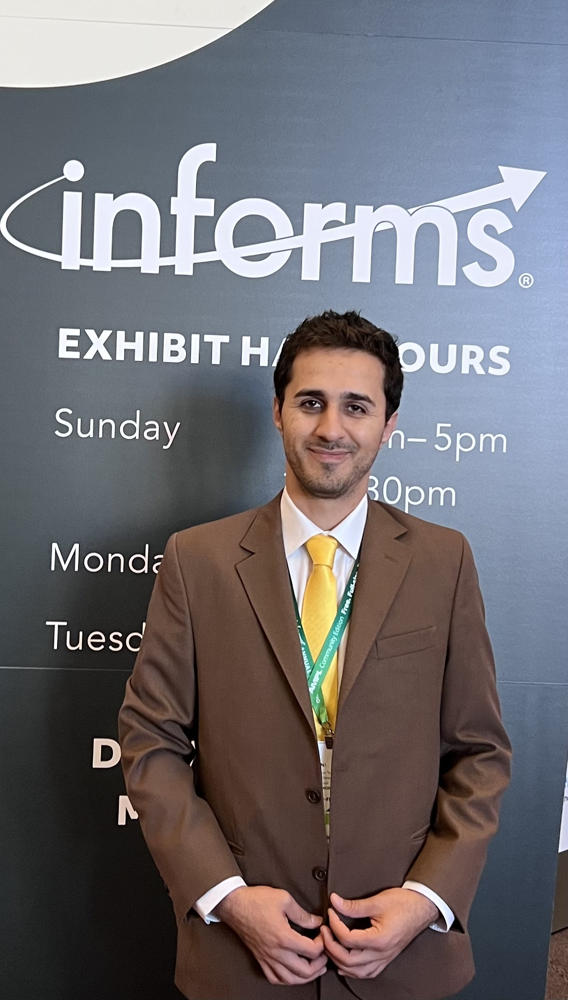

I am a social scientist and a teacher. I love doing research. And I love teaching.

AOM 2023, before starting my PhD
I am getting my PhD in Organization, Strategy, and International Management at the University of Texas at Dallas. My research sits at the intersection of organization theory, strategy, and international management topics.

INFORMS 2022, before starting my PhD
I have presented my research at more than 20 conferences, including the Academy of Management, the Strategic Management Society, Informs, Decision Science Institute, and the International Conference on Information Systems. Move to the other pages to see my list of publications, skills, and awards, and to read about my perspectives on teaching. You can also find interviews and reports on my work.